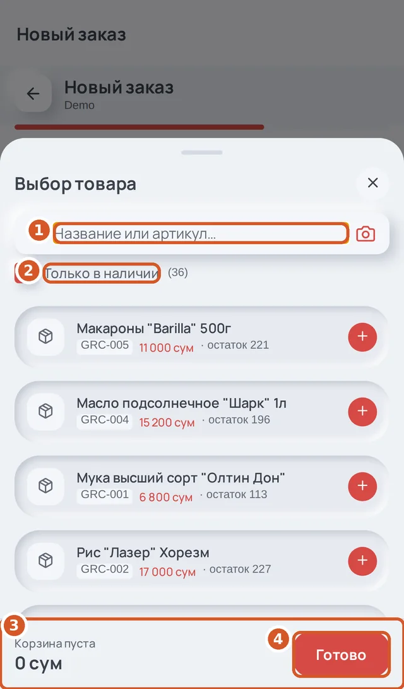
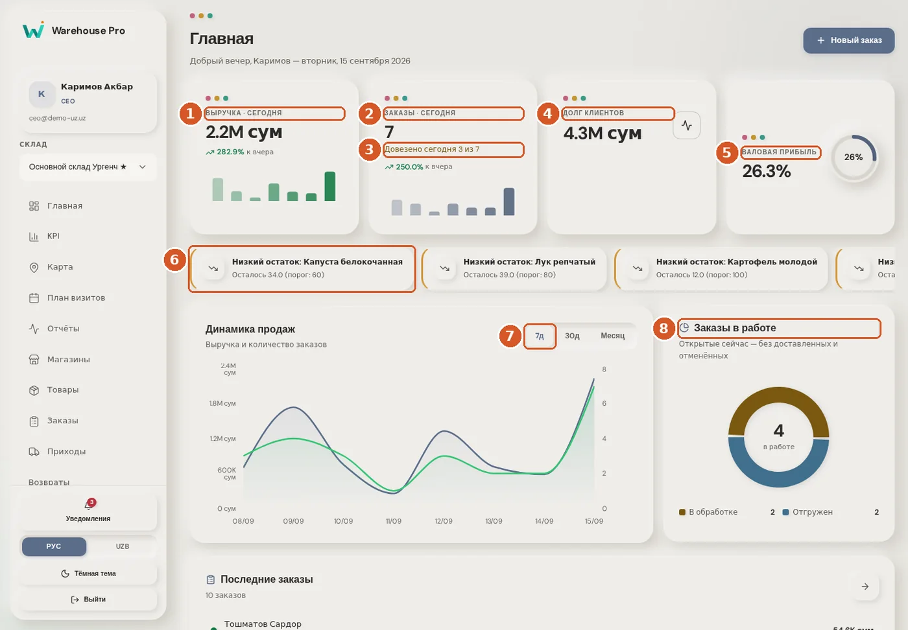
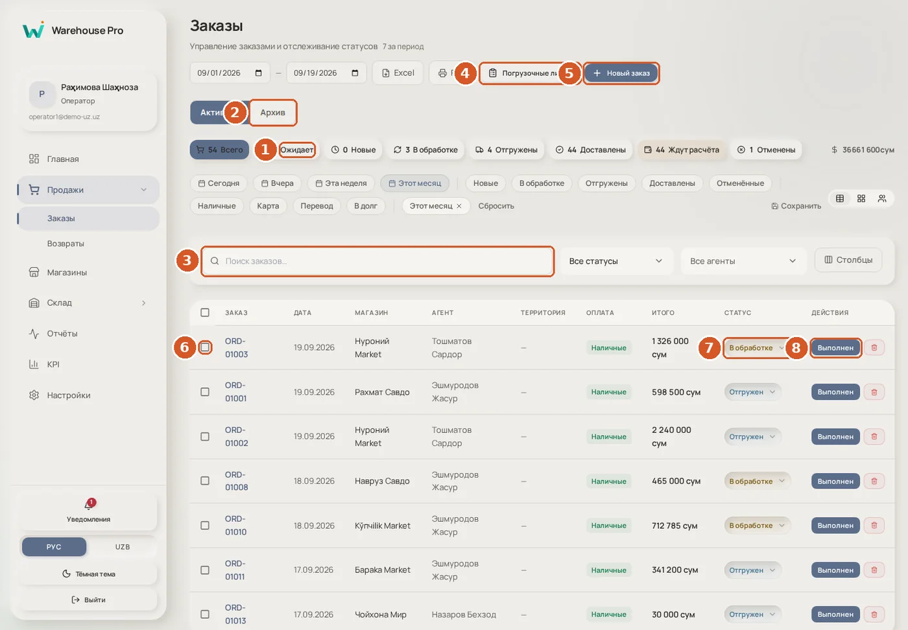
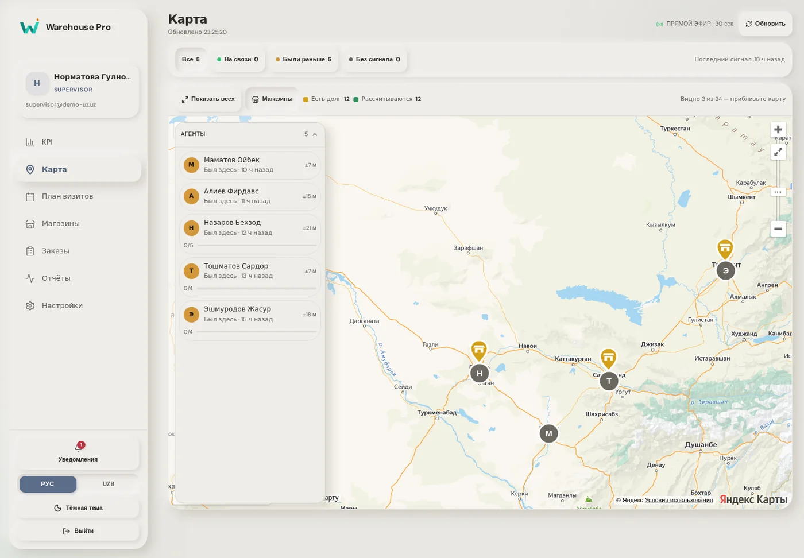
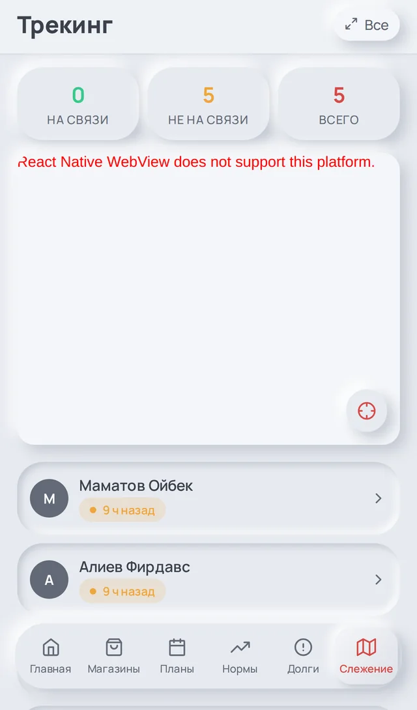
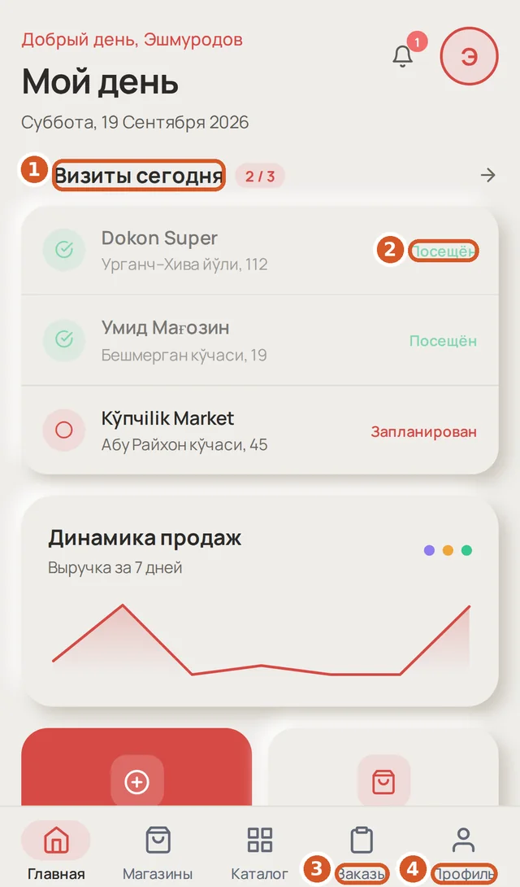
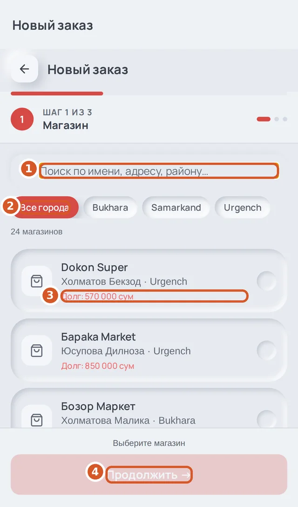
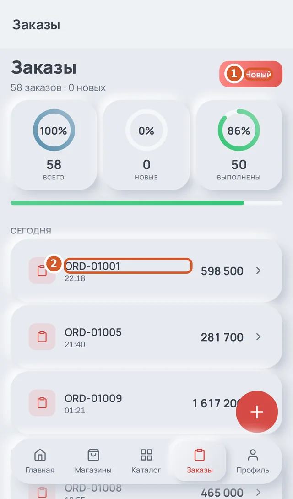
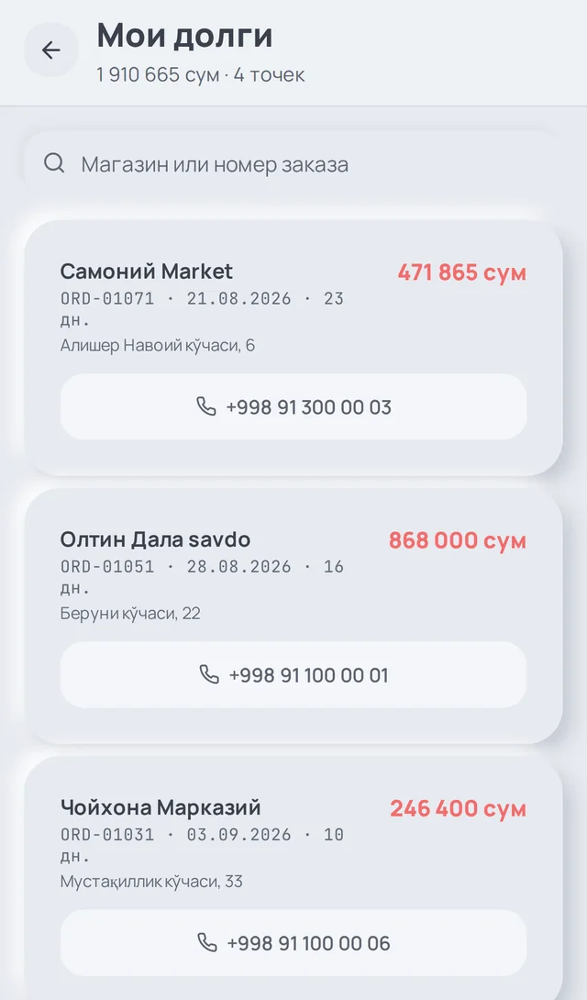

Warehouse Pro — учёт дистрибьютора: поле, склад, долги и зарплата в одной системе. Агент оформляет заказ у прилавка с телефона, склад собирает его по списку с партиями, курьер отдаёт товар и принимает деньги, а директор в тот же момент видит выручку, остаток и долги. Книга написана для владельца и его команды: за пять дней запустить работу и с первой недели получать честные цифры.
Издание 2026.09 · для организаций-арендаторовwarehouse-pro.uz
Warehouse Pro — учёт дистрибьютора: поле, склад, долги и зарплата в одной системе. Агент оформляет заказ у прилавка с телефона, склад собирает его по списку с партиями, курьер отдаёт товар и принимает деньги, а директор в тот же момент видит выручку, остаток и долги. Книга написана для владельца и его команды: за пять дней запустить работу и с первой недели получать честные цифры.
Часть 1 — план внедрения по дням: что настроить, кого завести, чем проверить. Часть 2 — рабочий день каждой роли с настоящими снимками экранов: сначала веб для офиса, затем телефон для поля. Часть 3 — как система считает остаток, долг и зарплату: это стоит прочитать владельцу и бухгалтеру. Часть 4 — что делать, если что-то пошло не так.
Обозначение
Что значит
«Заказы» → «Новый заказ»
Пункт меню, затем кнопка на экране — названия даны так, как они написаны в программе
① ② ③ на снимке
Выноски: цифры на снимке соответствуют подписям под ним
Совет
Как делают опытные команды — не обязательно, но экономит время
Внимание
Действие, которое влияет на деньги или остаток и которое трудно отменить
Снимки сделаны с настоящей программы на демонстрационной организации «Demo UZ». У вас будут ваши магазины и товары, но кнопки и экраны те же. Язык интерфейса — русский или узбекский — переключается в любой момент: в вебе внизу меню, на телефоне в профиле.
Часть 1. Внедрение за пять дней
План рассчитан на организацию с 3–15 агентами и одним складом. Каждый день заканчивается проверкой: если она проходит, следующий день можно начинать. Всё делается в вебе директором или оператором; телефон подключается на третий день.
День
Что делаем
Кто
Проверка в конце дня
1
Организация, склад, товары, стартовый остаток
Директор
На «Складе» видны все товары с правильными остатками
2
Магазины, территории, сотрудники и роли
Директор, оператор
Каждый сотрудник вошёл и увидел свой экран
3
Поле: телефоны агентов, план визитов, первые заказы
Супервайзер, агенты
Заказ агента появился в «Заказах» у оператора
4
Склад и доставка: лист, сборка, курьер, деньги
Оператор, курьер
Первый заказ прошёл путь до «Доставлен», деньги и долг сошлись
5
Контроль: главная, KPI, карта, отчёты, зарплата
Директор
Директор ответил на пять вопросов дня с первого экрана
День 1. Организация, склад, товары
Зарегистрируйте организацию: адрес компании, e-mail директора, пароль. Первый вход открывает мастер: основной склад → первый товар → приглашения. Мастер можно пройти позже — все шаги есть в меню.
«Настройки» → «Компания»: название, валюта и знак (сум), реквизиты для накладных (адрес, ИНН, директор, банк), логотип. Эти данные печатаются на всех документах — заполните сразу.
«Настройки» → «Склад»: основной склад — единственный, с которого продают. Дополнительные склады нужны только для хранения и перемещений.
«Товары» → «Импорт из Excel»: скачайте шаблон, заполните код, название, единицу, цену, штрих-код, упаковку (сколько штук в коробке). Импорт покажет ошибки построчно до записи. Можно завести и по одному — «Новый товар».
Стартовый остаток — приходом: «Приходы» → «Новый приход» → строки с количеством, партией и сроком годности → «Сохранить и завершить». Остаток появится на складе только после завершения прихода. Если товар уже на полках — заведите один приход «стартовый остаток» с фактическими количествами.
Точка заказа: у товара поле «минимальный остаток» — при падении ниже система напомнит. Общий порог для всех — в «Настройках» → «Компания».
СоветПартия и срок годности не обязательны, но с ними система сама подскажет складу, что отгружать первым (FEFO — раньше сгорает, раньше уходит), и покажет директору, что скоро сгорит. Для продуктов и напитков это окупается в первый месяц.
Проверка
Валюта и реквизиты заполнены
Все товары загружены, у продаваемых есть цена и единица
Приход завершён, на «Складе» остатки совпадают с полками
День 2. Магазины, территории, люди
«Магазины» → «Импорт из Excel» (или по одному): название, владелец, телефон, адрес, координаты, территория, стартовый долг, кредитный лимит. Поиск потом работает по названию, владельцу и телефону — заполняйте все три.
Территории: «Магазины» → «Территории». Территория — это маршрут агента; по ней супервайзер расставляет план на месяц одной кнопкой.
Кредитный лимит магазина: заказ в долг сверх лимита не пройдёт у агента — его подтвердит офис. Лимит ноль — без ограничений.
«Пользователи» → «Пригласить»: e-mail и роль. Роли: директор (всё), оператор (заказы, склад, приходы, возвраты), супервайзер (агенты, планы, карта), агент, курьер, мерчандайзер. Приглашённый получает письмо, ставит пароль и входит.
Порог скидки для полевых сотрудников: «Настройки» → «Компания». Скидка выше порога у агента не пройдёт сама — заказ встанет в «Ожидает», и оператор решит.
Директору — включить двухфакторную защиту («Настройки» → «Профиль»): она нужна для выгрузки копии базы и удаления журнала действий.
Заказы, магазины, товары, склад, приходы, возвраты; зарплату — только свою
Супервайзер
да
да
Карта, планы, KPI и зарплата агентов, магазины
Агент
частично
да
Свои магазины, заказы, план, долги, KPI и зарплата
Курьер
частично
да
Свои доставки и зарплата
Мерчандайзер
частично
да
План визитов и отчёты по полке
Проверка
Все магазины с телефоном и территорией
Каждый сотрудник вошёл и увидел свой экран
Порог скидки и кредитные лимиты заданы
День 3. Поле: телефоны, план, первые заказы
Установите приложение агентам, курьерам и мерчандайзерам (APK от вашего поставщика). Вход — тем же e-mail и паролем; язык — в профиле.
Супервайзер в вебе: «Планы» → вкладка «Месяц» → агент, территория, дни недели → «Расставить». Система сама распределит точки по дням и покажет, сколько визитов получится.
Агент с телефона: главная показывает визиты на сегодня; в магазине — «Новый заказ» → товары → оплата → «Подтвердить». Первые заказы делайте при супервайзере: одна минута у прилавка, и человек больше не спрашивает.
Проверьте GPS: агент должен разрешить геолокацию «всегда». Без неё карта у супервайзера пуста, а визиты не подтверждаются.

Рис. 1. Заказ у прилавка: поиск или сканер, «− n +», остаток виден до добавления
Проверка
У всех агентов есть план на неделю
Первый заказ агента виден у оператора в «Заказах»
Агент виден на карте у супервайзера
День 4. Склад и доставка
Оператор: «Заказы» → отметить заказы дня галочками → «Загруз. лист» → «Сформировать лист» → печать. Лист — задание складу и одновременно рейс курьера.
Сборка: «Погрузочные листы» → «Собрать». Система показывает, сколько нужно и из каких партий брать; кладовщик отмечает, сколько собрал. Меньше — недостача, о которой офис узнаёт сразу.
Курьер: в том же окне выбрать курьера — он проставится на все заказы листа. На телефоне курьера появится маршрут.
Доставка: курьер жмёт «Выехал по всем», у точки — сумма наличных и «Доставлено»; недовоз — «Не доставлено» с причиной; частичная оплата или возврат — «Оформить подробно».
Вечером оператор сверяет: «Заказы» → фильтр «Доставлены»; деньги курьера — в карточке каждого заказа и в отчётах.
ВниманиеОстаток списывается при отгрузке, деньги и долг — при доставке. Не переводите заказ в «Доставлен» руками, пока курьер не отчитался: иначе долг магазина будет посчитан по тому, что не довезли.
Проверка
Лист собран, курьер назначен
Заказ прошёл «Отгружен» → «Доставлен»
Долг магазина и наличные курьера сходятся с бумагой
День 5. Контроль
Главная директора: выручка и заказы за сегодня, «довезено N из M», долг клиентов, маржа; ниже — алерты (низкий остаток, просрочка, новые заказы, долги). Каждый алерт ведёт на экран, где на него отвечают.
KPI: кто из агентов делает план, кто нет; клик по агенту — разбор и зарплата за период.
Отчёты → «Долги»: кто, сколько, как давно; P&L — заработали или потеряли за период.
Зарплаты: оклад, процент от продаж или от довезённого (курьер), вычеты; «Выдать всем» — сотрудник подтверждает получение на телефоне.
Telegram: «Настройки» → «Telegram» — уведомления директору и операторам о новых заказах, долгах и остатках.

Рис. 2. Главная директора: ответы на вопросы дня одним экраном
1Выручка за сегодня и сравнение со вчера
2Довезено сегодня N из M
3Долг клиентов — ведёт в «Долги»
4Алерты — каждый открывает нужный экран
Проверка
Директор проверил пять вопросов дня с главной
Зарплата настроена, ведомость сходится с ожиданиями
Telegram подключён
Часть 2. Рабочий день каждой роли
Здесь каждая роль описана так, как проходит её день: утро, день, вечер. Сначала офис (веб), затем поле (телефон). Читать нужно только свою главу; директору полезно знать все.
Оператор офиса и склад
УтроПроверить новые заказы и «Ожидает», собрать листы, назначить курьеров
ДеньПринимать заказы по телефону, проводить приходы и возвраты, отвечать магазинам про долг
ВечерСверить доставленные заказы, деньги курьеров, закрыть листы
Заказы — рабочий экран

Рис. 3. Экран «Заказы»
1Сводка — каждое число фильтр; «Ожидает» — заказы, которые ждут решения офиса
2Поиск по номеру, магазину, агенту
3Погрузочные листы
4Новый заказ по звонку
5Статус — меняется прямо в строке
6Выполнить — оплата и закрытие заказа
Клик по строке открывает панель заказа: состав, оплата, курьер, корректировки, документы. Заказ агента со скидкой выше порога приходит в статусе «Ожидает» — в панели видна причина и кнопки «Подтвердить» и «Отклонить».
Рис. 4. Панель заказа
1Статус
2Детали, история, документы
3Сумма заказа
Заказ по телефону
«Новый заказ» → магазин: поиск по названию, владельцу или телефону; рядом виден долг.
Товары: код, название или сканер; у каждого «свободно N» — заказать больше нельзя.
Способ оплаты и примечание → «Создать заказ». Заказ сразу резервирует остаток.
Рис. 5. Быстрый заказ
1Магазин — поиск по названию, владельцу, телефону
Погрузочный лист и сборка
Отметьте заказы галочками → «Загруз. лист» → выберите формат (сводный по товарам или по маршруту) → «Сформировать лист». До этой кнопки в системе ничего не записано — «Отмена» ничего не оставляет.
Печать — задание кладовщику: в нём колонка «Партия (срок)» и пустая «Собрано» под отметки рукой.
«Погрузочные листы» → «Собрать»: внесите собранное по строкам (по умолчанию — как в листе) → «Подтвердить сборку». Недостача остаётся в строках и уходит офису уведомлением.
В том же окне — курьер на весь лист. Лист «доставлен» закрывается после рейса; ошибочный лист удаляется, и заказы освобождаются.
Рис. 6. Список листов: собрать, назначить курьера, удалить ошибочный
1Собрать — сборка по строкам
2Курьер на весь лист
Приходы, возвраты, склад
Приход: «Новый приход» → строки (код или сканер, количество, партия, срок, цена закупки) → «Сохранить и завершить». Черновик прихода сохраняется, если отвлеклись.
Возврат от магазина: заводит агент с телефона, офис проводит — товар возвращается на склад или списывается (брак, просрочка), долг магазина уменьшается.
Склад: остатки по товарам, партии и сроки, инвентаризация документом; «Отчёты по складу» — что сгорает и на какую сумму.
Рис. 7. Склад: остаток, резерв, свободно
СоветСканер-клавиатура работает везде, где есть поле поиска товара: отсканируйте код — товар добавится, следующий скан добавит следующий. В приёмке это быстрее любого списка.
Директор
УтроГлавная: выручка, довезено, долги, алерты; карта — кто вышел
ДеньKPI агентов, «Ожидает» и спорные заказы, журнал действий
ВечерОтчёты за день; раз в неделю — P&L; раз в месяц — зарплата
Рис. 8. KPI: разбор выбранного агента и его зарплата за период
Главная — пять вопросов дня; каждая плитка и алерт кликаются.
KPI: таблица агентов (продажи, визиты, план, балл); «нет GPS» серым — у кого нет следов на карте; клик — разбор и зарплата агента.
Карта: состав команды целиком — на связи, были раньше, без сигнала; маршрут за день, фото визитов, «подмена координат».
Отчёты: обзор, продажи, агенты, долги; выгрузка в Excel и PDF. P&L: выручка минус возвраты, себестоимость, зарплата и расходы.
Зарплаты: фонд за период, начислено/выдано, «Выдать всем»; настройки оклада, процента и вычетов.
Пользователи: приглашения, роли, ограничения ролей по арендатору. Журнал действий: отмена заказа, сторно оплаты, смена лимита — кто и когда.
Рис. 9. Зарплаты: фонд, выплачено / к выплате, «Выдать всем»
1Выдать всем — сотрудники подтверждают получение на телефоне
Рис. 10. Долги: кто, сколько, как давно — строка ведёт в магазин
Супервайзер
УтроКарта: кто вышел, кто без сигнала — позвонить
ДеньПланы: перенести точку, закрыть визит за агента по звонку; KPI — кто отстаёт
Вечер«Как прошёл день»: время в точках, километры, замечания

Рис. 11. Карта: состав команды и состояния
1На связи / были раньше / без сигнала — фильтры
Месяц: «Планы» → «Месяц» → агент, территория, дни недели → «Расставить». Прошедшие дни не заполняются, чтобы не портить норму.
День: список точек по агентам; «Посещён / Пропущен» — если агент отчитался по телефону; «Как прошёл день» — разбор по координатам.
Нормы: сколько визитов в месяц у агента; факт/план виден и агенту на телефоне.
Рис. 12. Планы на месяц одной кнопкой

Рис. 13. Телефон супервайзера: карта агентов
Торговый агент (телефон)
УтроГлавная: визиты на сегодня, долги — кому идти собирать
ДеньВ точке: остаток и долг магазина, заказ за минуту, отметка визита
ВечерЗаказы: всё ли ушло; зарплата: сколько начислено

Рис. 14. Главная агента
1Визиты сегодня — строка ведёт в магазин
2Долги — кому идти собирать
Магазины: ближайшие первыми, на карточке корзина — заказ в один тап. Новый магазин заводится прямо у точки.
Заказ: магазин → «Добавить товар» (поиск, сканер, «− n +», рядом остаток) → «Готово» → способ оплаты, обещанный срок → «Подтвердить заказ».
Без связи: магазины и каталог берутся из копии на телефоне (с датой), заказ ложится в очередь и уходит сам; в «Заказах» такие заказы видны с пометкой «ожидает отправки».
Визит: «Готово» на плане (с фото или без). Долги: список должников и звонок; принять деньги за долг можно в вебе у оператора.

Рис. 15. Шаг 1 — магазин

Рис. 16. Заказы, включая ожидающие отправки без связи

Рис. 17. Долги магазинов агента
ВниманиеСкидка выше порога, заданного директором, не оформится у прилавка: заказ уйдёт офису на подтверждение. Обещайте магазину то, что подтвердит офис.
Цифры на экранах директора честные только тогда, когда команда понимает, что за ними стоит. Эта глава — для владельца и бухгалтера.
Путь заказа и остаток
Статус
Что произошло
Остаток
Долг магазина
Новый
Заказ оформлен агентом или оператором
Резерв: свободно уменьшилось, на складе — нет
—
Ожидает
Скидка выше порога или лимит — ждёт офиса
Резерв
—
В обработке
Офис принял, лист собирается
Резерв
—
Отгружен
Товар уехал
Списан со склада по партиям (FEFO)
—
Доставлен
Курьер отчитался
—
+ сумма заказа − оплата; частичная доставка — по довезённому
Отменён / Возвращён
Заказ снят или вернулся
Резерв снят / товар вернулся
Долг снят
FEFO: при отгрузке первой уходит партия, у которой раньше срок; просроченная в отгрузку не берётся — только в списание. Сборка листа показывает те же партии заранее, чтобы склад брал именно их.
Долг магазина — два правила
Долг считается по заказу: сумма доставленного минус оплаты по этому заказу. Оплата больше остатка по заказу ложится на магазин отдельной строкой — переплата не теряется.
Возврат по заказу уменьшает долг этого заказа; возврат за период уменьшает выручку периода. Одно и то же событие не считается дважды.
Кредитный лимит: заказ в долг сверх лимита уходит офису на подтверждение. Стартовый долг задаётся при заведении магазина.
Зарплата
Агент: оклад + процент от продаж (по умолчанию организации или по товару) − вычеты (предлагаются за подозрительные визиты — решает директор).
Курьер: за штуку или процентом от довезённого — способ задаётся по человеку.
Обед и дорожные — за рабочий день; в P&L идёт выданное, а не начисленное.
«Выдать всем» записывает выплату; сотрудник видит её на телефоне и подтверждает «Получил».
P&L и журнал действий
P&L считает выручку за вычетом возвратов, себестоимость по партиям (или по товару, если у партии нет цены), выданную зарплату и расходы. Журнал действий хранит, кто и когда отменил заказ, сделал сторно оплаты, поменял лимит или цену — с фильтрами «Заказы», «Оплаты», «Магазины». Спорный вопрос с сотрудником решается за минуту.
Часть 4. Что делать, если
Ситуация
Что делать
Агент говорит: «заказ не ушёл»
На телефоне «Заказы» → карточка «ожидает отправки» — уйдёт при связи. Если «сервер отклонил» — причина написана: чаще всего остатка не хватило, оператор проверяет склад.
Заказ висит в «Ожидает»
Скидка выше порога или превышен лимит: оператор открывает панель заказа → «Подтвердить» или «Отклонить».
Склад собрал меньше, чем в листе
Это недостача при сборке: она записана в строках листа и в уведомлении. Проверьте остаток и партии на «Складе», при расхождении — инвентаризация.
Курьер привёз меньше или магазин вернул часть
Курьер оформляет «подробно»: возврат по позициям и оплата за оставшееся. Долг считается по довезённому.
Магазин не находится в поиске
Ищите по владельцу или телефону; проверьте, что магазин не в архиве.
Просрочка на складе
«Отчёты по складу» → сгорает / просрочено; списать через инвентаризацию или возврат поставщику. В отгрузку просроченное не уйдёт.
Нужно отменить или исправить заказ
До отгрузки — правка состава в панели заказа или отмена; после — корректировка с причиной. Всё остаётся в журнале действий.
Сотрудник забыл пароль
«Забыли пароль» на экране входа — письмо на e-mail. Директор может выслать приглашение заново из «Пользователей».
Нет карты у супервайзера
У агента не разрешена геолокация «всегда» или выключен GPS. «Без сигнала» на карте — позвоните агенту.
Не хватает функции в тарифе
Пробный период даёт все функции. Границы платных отчётов (P&L, KPI, долги) — по тарифу; обратитесь к поставщику.
Как поменять язык
Веб: РУС / UZB внизу меню. Телефон: Профиль → Язык.
Словарь терминов
Русский
O'zbekcha
Что это
Заказ
Buyurtma
Заявка магазина, оформленная агентом или оператором
Погрузочный лист
Yuklash varaqasi
Задание складу и рейс курьера из нескольких заказов
Сборка
Yig'ish
Подтверждение по строкам, сколько собрано
Партия / срок
Partiya / muddat
Порция товара с одним сроком годности; FEFO отдаёт первой ту, что раньше сгорает
Резерв
Zaxira
Остаток, занятый открытыми заказами
Долг
Qarz
Что магазин должен за доставленное минус оплаты
Кредитный лимит
Kredit limiti
Потолок долга, выше которого заказ подтверждает офис
Визит
Tashrif
Посещение точки агентом или мерчандайзером по плану
![Warehouse Pro]()